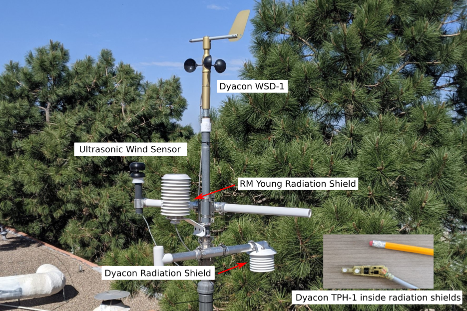
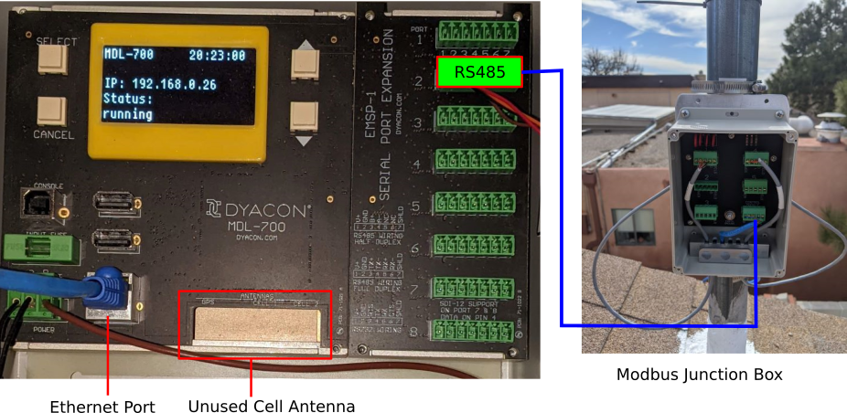
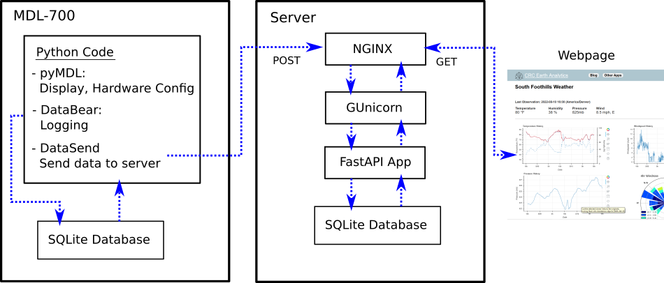

Overview
I built a very unusual weather station on my roof. The measurements are pretty standard: wind, temperature, humidity - but everything else is unique, all the way down to the electronics. You can see a subset of the data, updated every 10 minutes at apps.crceanalytics.com/wxstation (sorry no longer running).
It is far from the easiest or cheapest approach to monitoring the weather. Furthermore, my neighbor already has a publicly accessible station. Nonetheless, the station serves a number of purposes:
-
Sensor testing and development
-
A platform for demonstrating data analysis and data visualization
-
A way to enhance my electronics and embedded software skills
I worked for a number of years at Dyacon, and continue to provide ongoing services including software development and sensor evaluation. For that reason, I have several different Dyacon sensors that I can deploy for either long term monitoring or short term testing. The most unique Dyacon product is the "MDL-700" (figure 2) which makes up the "brains" of the station. The MDL (Modular Data Logger) is a Linux based computer that communicates with the sensors and provides local data logging. It is no longer on the market, but feel free to contact me if you are interested in one.
The rest of this post breaks down the different components of the station, highlighting certain details. The software running everything is largely hidden from view, but figure 3 provides a general summary of the wide variety of programs and scripts holding everything together. This is a "full stack" weather station meaning that I built everything from the MDL-700 operating system (sort of) to the data visualization website.
Sensors

Figure 1: Roof top weather station
| Measurements |
Sensor |
Comments |
| Wind speed/direction |
Dyacon WSD-1 |
|
| Wind speed/direction |
Calypso Ultrasonic |
Testing, not always active/installed |
| Temperature, Humidity, Pressure |
Dyacon TPH-1 |
Inside RM Young radiation shield |
| Temperature, Humidity, Pressure |
Dyacon TPH-1 |
Inside Dyacon radiation shield |
Temperature, pressure, and humidity are measured from inside a "radiation shield". A radiation shield blocks both direct and reflected sunlight from hitting the temperature sensor, which would bias the measurement warm. I have a couple different versions that I am comparing. Note that it isn't typical to measure air temperature and humidity at rooftop level. It would be better to have these instruments at 2 meters above the ground. The wind measurements are also likely to be affected by the wind interaction with the roof. However, for my purposes it is convenient to locate all sensors in one place.
MDL-700

Figure 2 - MDL-700 and Modbus Junction Box
Sensors are connected to the MDL-700 using RS-485 serial communication. Additionally, all sensors utilize the Modbus protocol to transfer data. Modbus defines how messages are exchanged between the sensor and the MDL. These messages control what data is sent and when. Modbus is a "bus" protocol, meaning many sensors can be wired together in order to send all messages along a single cable. The Dyacon Modbus Junction Box provides a simple means of connecting all the sensors together and then back to a single port on the MDL.
The MDL-700 is a computer running a customized embedded version of Linux. It has been designed to be paired with various expansion modules. The Serial Port Expansion Module (seen above) has 8 ports that can utilize RS-232, RS-485 or SDI-12 communication schemes. An embedded cell phone can also be added, making it possible to transfer data over cell networks. I connect to the MDL via my local computer network.
Software Architecture

Figure 3: Software Stack
With the exception of some of the hardware drivers, all the software on both the MDL and the web server is open source. One of the original goals of the MDL was to create an open source data logger. By making everything open source, the MDL can be customized to whatever the hardware will support. However, the downside of having complete versatility is that there is a lot of software that must be developed for specific behavior. In many cases the open source software already exists to implement a project. For example, the web server (figure 3) has many components that work together to render the South Foothills Weather web page (6/19/2025 - sorry no longer active). Luckily, the entire software stack consists of active, popular open source projects. In contrast, I was unable to find open source data logging software that fit my goals (Let me know if you know of something!). That lead me to development DataBear.
DataBear is my attempt at creating open source data logging software that can be used on different platforms (like a Raspberry Pi). Developing DataBear was a great learning experience, and it is actively running on the MDL. However, I would not claim it is ready for widespread use. Nonetheless anyone is free to fork it on Github and see if it is useful.
Python is also used in the MDL display. At a low level, the display is controlled simply by sending bits to a particular device file. I used the Pillow library to create figures which get converted to a stream of bytes before being loaded to the display. This functionality is part of another open source library I developed: pyMDL. Unlike DataBear, this library is specific to the MDL and provides some hardware configuration in addition to controlling the display.
Getting the data off the MDL required just a simple script to grab data from the SQLite database and send it to the server. However, the server must be set up to receive the data and for that I am utilizing FastAPI.
Full Stack Weather
So there is a brief tour of a full stack weather station. There is a whole lot that can be written about each of the components I mentioned. Feel free to send me feedback about what you would like to learn more about.